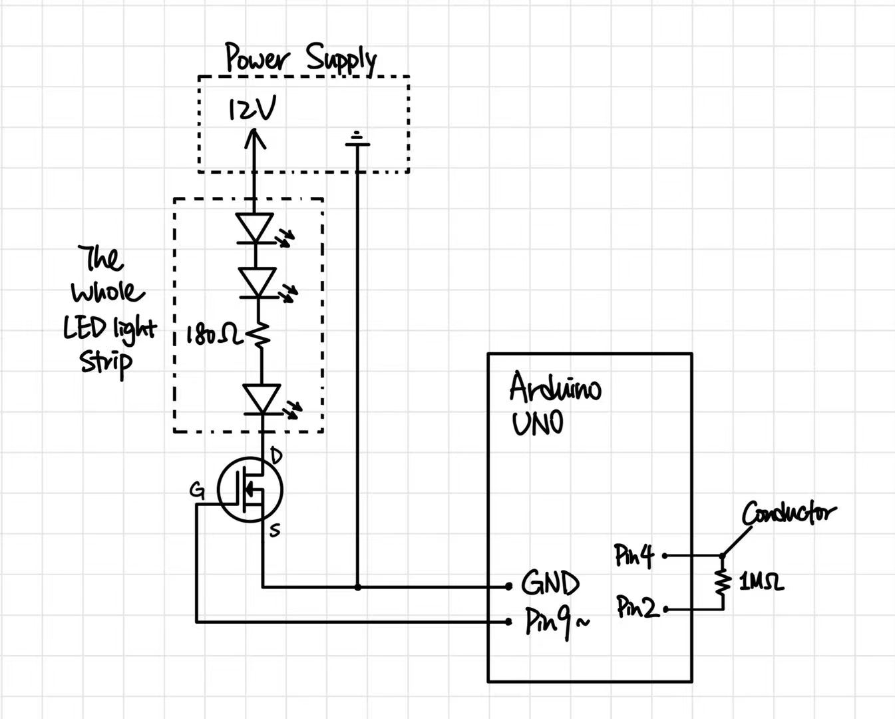
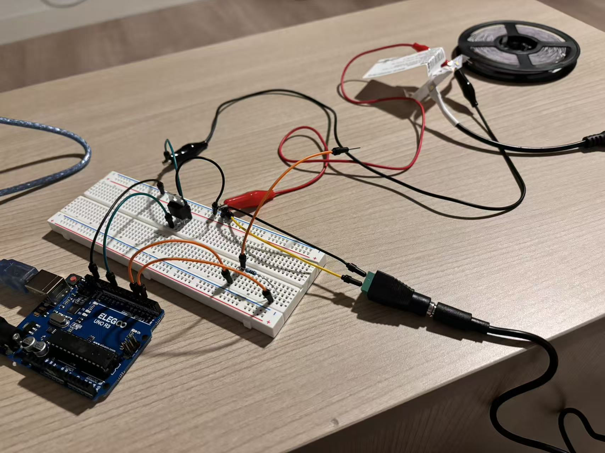
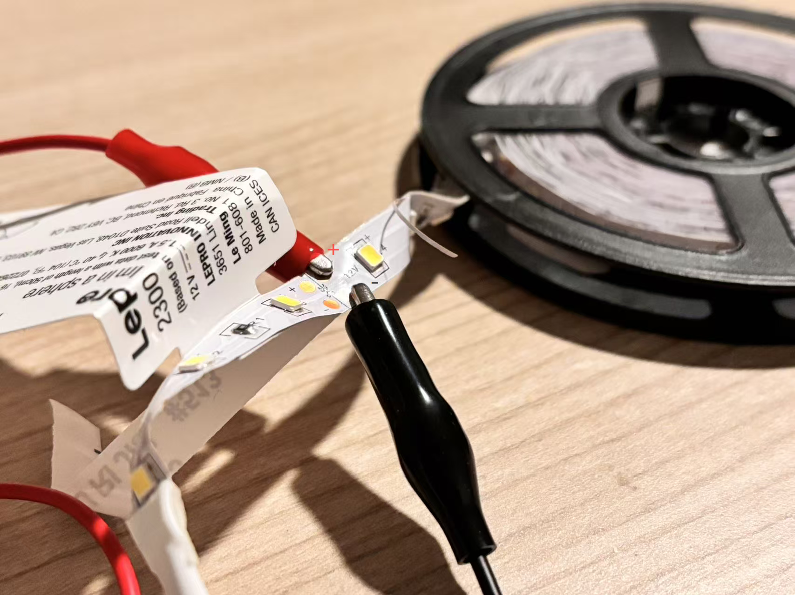
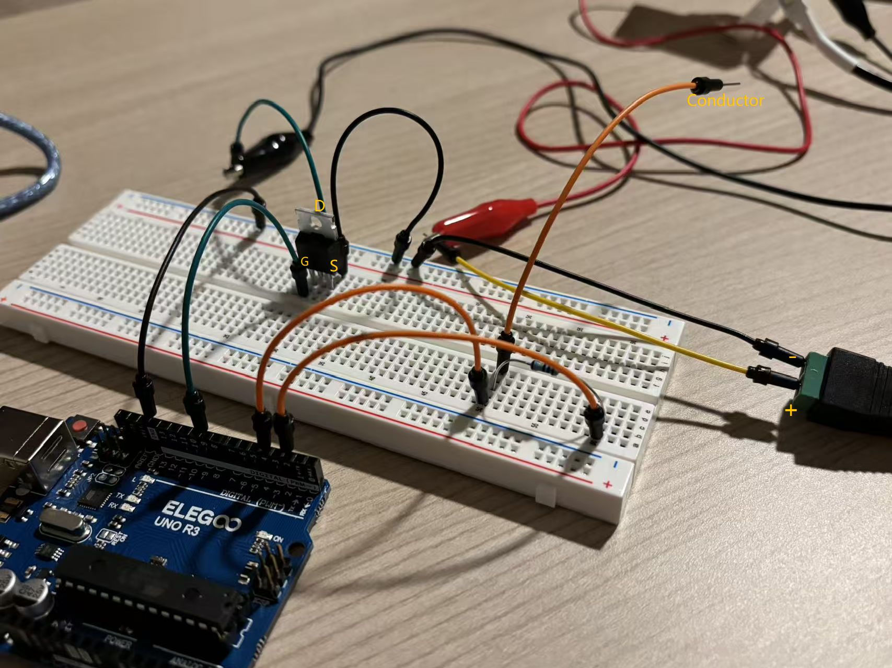
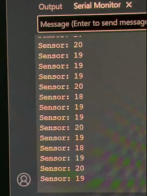
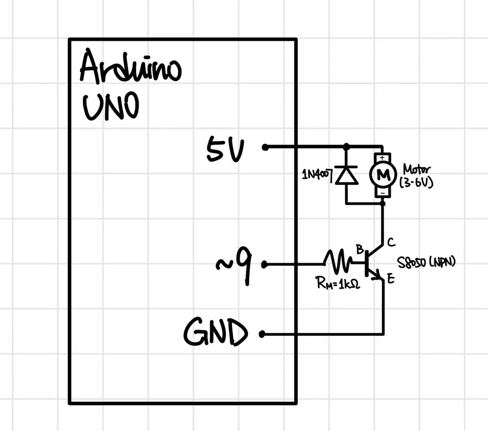
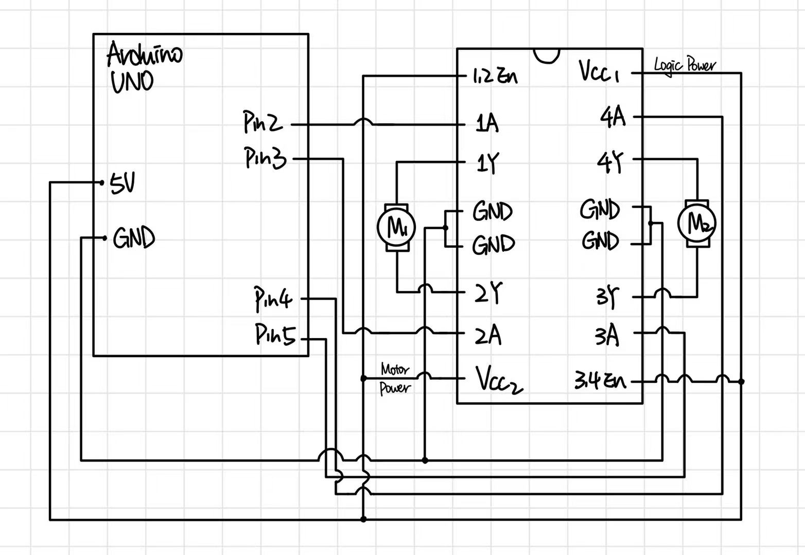

*The 12V power supply ground, the MOSFET Source, and the Arduino GND are all connected together (Common Ground) to ensure the control signal works properly.
* When I showed my schematic to AI, it suggested adding a gate resistor to limit the current and protect the Arduino pin. However, when I was looking at the lecture slides, I noticed that the NPN transistor had a base resistor, but the MOSFET in the LED strip demo did not have a gate resistor. I asked the AI about this discrepancy to confirm if the slide was correct. The AI explained that MOSFETs are voltage-controlled and draw almost no steady current at the gate, which is why the resistor is often omitted in demos, but adding one is safer in practice to prevent transient current spikes. Since the lecture slides did not include it, I decided to follow the slide's schematic exactly, but I used this conversation to deepen my understanding of the difference between current-controlled and voltage-controlled components.



// Derived from CapacitiveSense Library Demo Sketch by Paul Badger 2008
#include <CapacitiveSensor.h>
// Set up the Capacitive sensor with send pin 2 and receive pin 4
CapacitiveSensor cs_2_4 = CapacitiveSensor(2, 4);
// Define pin 9 connected to the MOSFET Gate
int mosfetPin = 9;
// Variable to track if the sensor is currently being touched
bool isTouched = false;
// Variable to store the current brightness level (0-255)
int brightness = 0;
// Variable to store the time when the touch started
int touchStartTime = 0;
// Setup function runs once at the beginning
void setup() {
// Begin Serial communication to print values
Serial.begin(9600);
// turn off autocalibrate on channel 1
cs_2_4.set_CS_AutocaL_Millis(0xFFFFFFFF);
// Set the MOSFET pin as an output
pinMode(mosfetPin, OUTPUT);
// Initial state output 0V, so the LED strip is off
analogWrite(mosfetPin, 0);
}
// Loop function runs repeatedly forever
void loop() {
// Read the smoothed capacitive sensor value
int sensorValue = cs_2_4.capacitiveSensor(30);
// Detect the moment the finger touches down, if reading is above threshold and it was not touched before
if (sensorValue > 1000 && isTouched == false) {
// Mark as touched
isTouched = true;
// Record the exact time the touch started in milliseconds
touchStartTime = millis();
}
// While the finger is holding down, if reading is still above threshold and is currently touched
if (sensorValue > 1000 && isTouched == true) {
// Check if the brightness has not reached the maximum
if (brightness < 255) {
// Increase the brightness by 2
brightness = brightness + 2;
// Constrain the brightness value to stay within 0 and 255
brightness = constrain(brightness, 0, 255);
// Send the PWM signal to the MOSFET to update the LED brightness
analogWrite(mosfetPin, brightness);
// Wait 15 milliseconds to control how fast the light gets brighter
delay(15);
}
}
// Detect the moment the finger releases, if reading drops below threshold and it was touched before
if (sensorValue < 1000 && isTouched == true) {
// Reset the touched state
isTouched = false;
// Calculate how long the finger was held down
int pressDuration = millis() - touchStartTime;
// If pressed for less than 200ms (a short tap)
if (pressDuration < 200) {
// Turn off the LED strip
brightness = 0;
// Send 0 to the MOSFET to shut it off
analogWrite(mosfetPin, 0);
}
}
}

I have the IRLZ44N MOSFET, and its absolute maximum current between pins 2 and 3 is 47A.

*AI mentioned that for a 250mA motor, it is better to use an external 5V power supply rather than the Arduino's 5V pin to avoid overloading the Arduino regulator. While an external 5V supply is safer for high-current loads, the class demo used the Arduino 5V directly, so I followed the demo setup for this schematic.

// Pseudo code for controlling two motors using L293D chip
// Define motor control pins
int motor1Pin1 = 2; // Motor 1 forward
int motor1Pin2 = 3; // Motor 1 backward
int motor2Pin1 = 4; // Motor 2 forward
int motor2Pin2 = 5; // Motor 2 backward
void setup() {
// Set all motor control pins as outputs
pinMode(motor1Pin1, OUTPUT);
pinMode(motor1Pin2, OUTPUT);
pinMode(motor2Pin1, OUTPUT);
pinMode(motor2Pin2, OUTPUT);
}
void loop() {
// Move both motors forward
digitalWrite(motor1Pin1, HIGH);
digitalWrite(motor1Pin2, LOW);
digitalWrite(motor2Pin1, HIGH);
digitalWrite(motor2Pin2, LOW);
delay(1000); // Run for 1 second
// Move both motors backward
digitalWrite(motor1Pin1, LOW);
digitalWrite(motor1Pin2, HIGH);
digitalWrite(motor2Pin1, LOW);
digitalWrite(motor2Pin2, HIGH);
delay(1000); // Run for 1 second
// Move motor 1 forward and motor 2 backward
digitalWrite(motor1Pin1, HIGH);
digitalWrite(motor1Pin2, LOW);
digitalWrite(motor2Pin1, LOW);
digitalWrite(motor2Pin2, HIGH);
delay(1000); // Run for 1 second
// Move motor 1 backward and motor 2 forward
digitalWrite(motor1Pin1, LOW);
digitalWrite(motor1Pin2, HIGH);
digitalWrite(motor2Pin1, HIGH);
digitalWrite(motor2Pin2, LOW);
delay(1000); // Run for 1 second
}
I used DeepSeek AI to help me check my understanding of the questions, understand the concepts, and to provide some suggestions for my answers. I found it helpful to clarify my thoughts and provide guidance. The conversation can be accessed here.